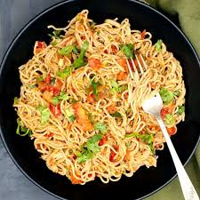

MM FOODS
Welcome to 'MM FOODIS', where your taste buds embark on a Delicious adventure!
Welcome to MM FOODS, your ultimate culinary destination! Indulge in tantalizing burgers, crafted with the finest ingredients for a burst of flavor. Crispy fries await, seasoned to perfection for a delightful crunch. Explore vibrant greens and comforting noodles, from rich pasta to aromatic stir-fries. Dive into a world of flavor at MM FOODS!
| awsome tsate | awsome ingredients |
Delight in the comforting embrace of noodle dishes, from steaming bowls of soup to sizzling stir-fries. And finally, satisfy your sweet cravings with decadent desserts that are as beautiful as they are delicious. At MM FOODS, every bite tells a story of passion, creativity, and culinary excellence
Burgers are the ultimate symbol of comfort food
Burgers are the epitome of comfort food, adored for their versatility and delicious flavors. MM FOODS celebrates the art of burger-making with a diverse range of recipes, from classic beef patties to gourmet creations. Whether grilled or stacked high, our collection offers something to satisfy every burger craving.
| one | two | three | four |
Indulge in the joy of burger exploration at MM FOODS, where culinary creativity knows no bounds. Discover unique flavor combinations, innovative toppings, and mouthwatering sauces that elevate the humble burger to new heights. Whether you're a traditionalist or an adventurous eater, our burger recipes promise to delight and inspire.
Keep your friends close and your fries closer
Fries, the crispy golden delight, hold a special place in the hearts of food lovers everywhere. At MM FOODS, we elevate this humble side dish to new heights, offering tips for achieving the perfect crunch and seasoning ideas that tantalize the taste buds.
 |
 |
||
| one | two | three | four |
From shoestring to steak-cut, fries come in many shapes and sizes, each offering its own unique texture and flavor. At MM FOODS, we explore the world of fries, from classic potato fries to innovative alternatives like sweet potato and zucchini fries. Join us in celebrating the crispy, golden goodness of this beloved snack.
Eat your greens and glow from the inside out
Greens are the vibrant heroes of healthy eating, packed with essential nutrients and bursting with flavor. At MM FOODS, we celebrate the verdant beauty of greens with a bounty of salad recipes that showcase their freshness and versatility. From crisp lettuce and peppery arugula to tender spinach and hearty kale, our salads are a celebration of nature's bounty.
| one | two | three | four |
Explore our collection of salad recipes to discover new ways to enjoy greens as the star of your meal or the perfect side dish. From light and refreshing summer salads to hearty winter bowls, there's a green-inspired creation for every season and palate at MM FOODS.
Noodles are not just a food, they are a feeling
Noodles, a beloved staple in cuisines worldwide, offer endless possibilities for delicious meals. From comforting bowls of ramen to savory stir-fries, noodles are versatile and satisfying. At MM FOODS, explore a diverse range of noodle dishes, each bursting with flavor and culinary creativity, inviting you to savor the delights of this timeless comfort food.
 |
 |
 | |
| one | two | three | four |
Indulge in the rich heritage of noodle cuisine with MM FOODS curated collection of recipes. From the silky strands of Italian pasta to the chewy textures of Asian noodles, each dish tells a story of cultural tradition and culinary innovation. Whether you're craving a hearty bowl of pho or a zesty pad Thai, our recipes are sure to satisfy your noodle cravings and inspire your next culinary adventure.
A balanced diet is having a cupcake in each hand
Desserts are the sweet finale to any meal, offering a delightful indulgence for the senses. At MM FOODS, we celebrate the art of dessert-making with a tantalizing array of recipes to satisfy every sweet tooth. From decadent chocolate cakes to delicate fruit tarts, our desserts are crafted with love and creativity, ensuring a memorable culinary experience.
 |
|||
| one | two | three | four |
Indulge in the irresistible world of desserts at MM FOODS, where every bite is a symphony of flavors and textures. Whether you crave rich and creamy cheesecakes or light and airy pavlovas, our curated collection of dessert recipes promises to delight your taste buds and leave you craving more.
Copyright © 2024, 'MMFOODS'
All The RIGHTS Reserved
Devloped And Maintained By MM ORGANIZATIONS,Pvt.LtmTelangana,India